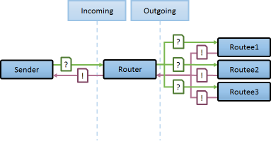
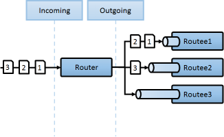

Routers
A router is a special type of actor whose job is to route messages to other actors called routees. Different routers use different strategies to route messages efficiently.
Routers can be used inside or outside of an actor, and you can manage the routees yourself or use a self contained router actor with configuration capabilities, and can also resize dynamically under load.
Akka.NET comes with several useful routers you can choose right out of the box, according to your application's needs. But it is also possible to create your own.
Note:
In general, any message sent to a router will be forwarded to one of its routees, but there is one exception.
The special Broadcast Message will be sent to all routees.
Deployment
Routers can be deployed in multiple ways, using code or configuration.
Code deployment
The example below shows how to deploy 5 workers using a round robin router:
var props = Props.Create<Worker>().WithRouter(new RoundRobinPool(5));
var actor = system.ActorOf(props, "worker");
It's important to understand that although you create the Props and add the router later, the deployment happens in reverse order, with the workers being added to the router. The above code can also be written as:
var props = new RoundRobinPool(5).Props(Props.Create<Worker>());
Configuration deployment
The same router may be defined using a HOCON deployment configuration.
In order to do that, define a HOCON section with the path of the actor, and create the actor in that path using FromConfig.Instance.
akka.actor.deployment {
/workers {
router = round-robin-pool
nr-of-instances = 5
}
}
var props = Props.Create<Worker>().WithRouter(FromConfig.Instance);
var actor = system.ActorOf(props, "workers");
For router groups, the same idea applies with slightly different syntax:
akka.actor.deployment {
/workers {
router = round-robin-group
routees.paths = ["/user/workers/w1", "/user/workers/w2", "/user/workers/w3"]
}
}
var props = Props.Create<Worker>().WithRouter(FromConfig.Instance);
var actor = system.ActorOf(props, "workers");
As you can see above, the advantage of using HOCON for routers is that you can change the deployment of routers easily without recompiling the code.
Pools vs. Groups
There are two types of routers:
Pools
Router "Pools" are routers that create their own worker actors, that is; you provide the number of instances as a parameter to the router and the router will handle routee creation by itself.
Groups
Sometimes, rather than having the router actor create its routees, it is desirable to create routees yourself and provide them to the router for its use. You can do this by passing the paths of the routees to the router's configuration. Messages will be sent with
ActorSelectionto these paths.
Note:
Most routing strategies listed below are available in both types. Some of them may be available only in one type due to implementation requirements.
Supervision
Routers are implemented as actors, so a router is supervised by it's parent, and they may supervise children.
Group routers use routees created somewhere else, it doesn't have children of its own. If a routee dies, a group router will have no knowledge of it.
Pool routers on the other hand create their own children. The router is therefore also the routee's supervisor.
By default, routers use the OneForOneStrategy, so if a child dies, only that actor is restarted. If you want to change this behavior, the supervision strategy of the router actor can be configured with the SupervisorStrategy property of the Pool.
Routing Strategies
These are the routing strategies provided by Akka.NET out of the box.
RoundRobin
RoundRobinPool and RoundRobinGroup are routers that sends messages to routees in round-robin order. It's the simplest way to distribute messages to multiple worker actors, on a best-effort basis.
Usage:
RoundRobinPool defined in configuration:
akka.actor.deployment {
/some-pool {
router = round-robin-pool
nr-of-instances = 5
}
}
var router = system.ActorOf(Props.Create<Worker>().WithRouter(FromConfig.Instance), "some-pool");
RoundRobinPool defined in code:
var router = system.ActorOf(Props.Create<Worker>().WithRouter(new RoundRobinPool(5)), "some-pool");
RoundRobinGroup defined in configuration:
akka.actor.deployment {
/some-group {
router = round-robin-group
routees.paths = ["/user/workers/w1", "/user/workers/w2", "/user/workers/w3"]
}
}
var router = system.ActorOf(Props.Empty.WithRouter(FromConfig.Instance), "some-group");
RoundRobinGroup defined in code:
var workers = new [] { "/user/workers/w1", "/user/workers/w3", "/user/workers/w3" }
var router = system.ActorOf(Props.Empty.WithRouter(new RoundRobinGroup(workers)), "some-group");
Broadcast
The BroadcastPool and BroadcastGroup routers will, as the name implies, broadcast any message to all of its routees.

Usage:
BroadcastPool defined in configuration:
akka.actor.deployment {
/some-pool {
router = broadcast-pool
nr-of-instances = 5
}
}
var router = system.ActorOf(Props.Create<Worker>().WithRouter(FromConfig.Instance), "some-pool");
BroadcastPool defined in code:
var router = system.ActorOf(Props.Create<Worker>().WithRouter(new BroadcastPool(5)), "some-pool");
BroadcastGroup defined in configuration:
akka.actor.deployment {
/some-group {
router = broadcast-group
routees.paths = ["/user/a1", "/user/a2", "/user/a3"]
}
}
var router = system.ActorOf(Props.Empty.WithRouter(FromConfig.Instance), "some-group");
BroadcastGroup defined in code:
var actors = new [] { "/user/a1", "/user/a2", "/user/a3" }
var router = system.ActorOf(Props.Empty.WithRouter(new BroadcastGroup(actors)), "some-group");
Random
The RandomPool and RandomGroup routers will forward messages to routees in random order.
Usage:
RandomPool defined in configuration:
akka.actor.deployment {
/some-pool {
router = random-pool
nr-of-instances = 5
}
}
var router = system.ActorOf(Props.Create<Worker>().WithRouter(FromConfig.Instance), "some-pool");
RandomPool defined in code:
var router = system.ActorOf(Props.Create<Worker>().WithRouter(new RandomPool(5)), "some-pool");
RandomGroup defined in configuration:
akka.actor.deployment {
/some-group {
router = random-group
routees.paths = ["/user/workers/w1", "/user/workers/w2", "/user/workers/w3"]
}
}
var router = system.ActorOf(Props.Empty.WithRouter(FromConfig.Instance), "some-group");
RandomGroup defined in code:
var workers = new [] { "/user/workers/w1", "/user/workers/w3", "/user/workers/w3" }
var router = system.ActorOf(Props.Empty.WithRouter(new RandomGroup(workers)), "some-group");
ConsistentHashing
The ConsistentHashingPool and ConsistentHashingGroup are routers that use a consistent hashing algorithm to select a routee to forward the message. The idea is that messages with the same key are forwarded to the same routee. Any .NET object can be used as a key, although it's usually a number, string or Guid.
ConsistentHash can be very useful when dealing with Commands in the sense of CQRS or [Domain Driven Design].
For example, let's assume we have the following incoming sequence of "Customer Commands":
In this case we might want to group all messages based on "Customer ID" (ID in the diagram).
By using a ConsistentHash router we can now process multiple commands in parallel for different Customers, while still processing messages for each specific Customer in ordered sequence, and thus preventing us from getting race conditions with ourselves when applying each command on each customer entity.

There are 3 ways to define what data to use for the consistent hash key.
You can define a hash mapping delegate using the
WithHashMappermethod of the router to map incoming messages to their consistent hash key. This makes the decision transparent for the sender.new ConsistentHashingPool(5).WithHashMapping(o => { if (o is IHasCustomKey) return ((IHasCustomKey)o).Key; return null; });The messages may implement
IConsistentHashable. The key is part of the message and it's convenient to define it together with the message definition.public class SomeMessage : IConsistentHashable { public Guid GroupID { get; private set; } public object ConsistentHashKey { get { return GroupID; } } }The messages can be wrapped in a
ConsistentHashableEnvelopeto define what data to use for the consistent hash key. The sender knows the key to use.public class SomeMessage { public Guid GroupID { get; set; } } var originalMsg = new SomeMessage { GroupID = Guid.NewGuid(); }; var msg = new ConsistentHashableEnvelope(originalMsg, originalMsg.GroupID);
You may implement more than one hashing mechanism at the same time. Akka.NET will try them in the order above. That is, if the HashMapping method returns null, Akka.NET will check for the IConsistentHashable interface in the message (2 and 3 are technically the same).
Usage:
ConsistentHashingPool defined in configuration:
akka.actor.deployment {
/some-pool {
router = consistent-hashing-pool
nr-of-instances = 5
virtual-nodes-factor = 10
}
}
var router = system.ActorOf(Props.Create<Worker>().WithRouter(FromConfig.Instance), "some-pool");
ConsistentHashingPool defined in code:
var router = system.ActorOf(Props.Create<Worker>().WithRouter(new ConsistentHashingPool(5)), "some-pool");
ConsistentHashingGroup defined in configuration:
akka.actor.deployment {
/some-group {
router = consistent-hashing-group
routees.paths = ["/user/workers/w1", "/user/workers/w2", "/user/workers/w3"]
virtual-nodes-factor = 10
}
}
var router = system.ActorOf(Props.Empty.WithRouter(FromConfig.Instance), "some-group");
ConsistentHashingGroup defined in code:
var workers = new [] { "/user/workers/w1", "/user/workers/w3", "/user/workers/w3" }
var router = system.ActorOf(Props.Empty.WithRouter(new ConsistentHashingGroup(workers)), "some-group");
Notes:
virtual-nodes-factoris the number of virtual nodes per routee that is used in the consistent hash node ring - if not defined, the default value is 10 and you shouldn't need to change it unless you understand how the algorithm works and know what you are doing.- It is possible to define this value in code using the
WithVirtualFactor(...)method of the ConsistentHashingPool/Group object.
TailChopping
The TailChoppingPool and TailChoppingGroup routers send the message to a random routee, and if no response is received after a specified delay, send it to another randomly selected routee. It waits for the first reply from any of the routees, and forwards it back to the original sender. Other replies are discarded. If no reply is received after a specified interval, a timeout Failure is generated.
The goal of this router is to decrease latency by performing redundant queries to multiple routees, assuming that one of the other actors may still be faster to respond than the initial one.
This optimization was described nicely in a blog post by Peter Bailis: Doing redundant work to speed up distributed queries.
Usage:
TailChoppingPool defined in configuration:
akka.actor.deployment {
/some-pool {
router = tail-chopping-pool
nr-of-instances = 5
within = 10 seconds
tail-chopping-router.interval = 20 milliseconds
}
}
var router = system.ActorOf(Props.Create<Worker>().WithRouter(FromConfig.Instance), "some-pool");
TailChoppingPool defined in code:
var within = TimeSpan.FromSeconds(10);
var interval = TimeSpan.FromMilliseconds(20);
var router = system.ActorOf(Props.Create<Worker>().WithRouter(new TailChoppingPool(5, within, interval)), "some-pool");
TailChoppingGroup defined in configuration:
akka.actor.deployment {
/some-group {
router = tail-chopping-group
routees.paths = ["/user/workers/w1", "/user/workers/w2", "/user/workers/w3"]
within = 10 seconds
tail-chopping-router.interval = 20 milliseconds
}
}
var router = system.ActorOf(Props.Empty.WithRouter(FromConfig.Instance), "some-group");
TailChoppingGroup defined in code:
var workers = new [] { "/user/workers/w1", "/user/workers/w3", "/user/workers/w3" }
var within = TimeSpan.FromSeconds(10);
var interval = TimeSpan.FromMilliseconds(20);
var router = system.ActorOf(Props.Empty.WithRouter(new TailChoppingGroup(workers, within, interval)), "some-group");
Notes:
withinis the time to wait for a reply from any routee before timing outtail-chopping-router.intervalis the interval between requests to the other routees
ScatterGatherFirstCompleted
The ScatterGatherFirstCompletedPool and ScatterGatherFirstCompletedRouter routers will broadcast the message to all routees and reply back to the original sender with the first reply it receives. All other replies are discarded. If no reply is received after a specified interval, a timeout Failure is generated.
This is useful in scenarios where you can accept any reply to a query and doesn't care who answers (eg. you may query multiple servers in a cluster just to know if any of them is online - if one answers, you may not care about the others).

Usage:
ScatterGatherFirstCompletedPool defined in configuration:
akka.actor.deployment {
/some-pool {
router = tail-chopping-pool
nr-of-instances = 5
within = 10 seconds
}
}
var router = system.ActorOf(Props.Create<Worker>().WithRouter(FromConfig.Instance), "some-pool");
ScatterGatherFirstCompletedPool defined in code:
var within = TimeSpan.FromSeconds(10);
var router = system.ActorOf(Props.Create<Worker>().WithRouter(new ScatterGatherFirstCompletedPool(5, within)), "some-pool");
ScatterGatherFirstCompletedPool defined in configuration:
akka.actor.deployment {
/some-group {
router = tail-chopping-group
routees.paths = ["/user/workers/w1", "/user/workers/w2", "/user/workers/w3"]
within = 10 seconds
}
}
var router = system.ActorOf(Props.Empty.WithRouter(FromConfig.Instance), "some-group");
ScatterGatherFirstCompletedGroup defined in code:
var workers = new [] { "/user/workers/w1", "/user/workers/w3", "/user/workers/w3" }
var within = TimeSpan.FromSeconds(10);
var router = system.ActorOf(Props.Empty.WithRouter(new ScatterGatherFirstCompletedGroup(workers, within)), "some-group");
Notes:
withinis the time to wait for a reply from any routee before timing out
SmallestMailbox
The SmallestMailboxPool router will send the message to the routee with fewest messages in mailbox. The selection is done in this order:
- Pick any idle routee (not processing message) with empty mailbox
- Pick any routee with empty mailbox
- Pick routee with fewest pending messages in mailbox
- Pick any remote routee, remote actors are consider lowest priority, since their mailbox size is unknown

Usage:
SmallestMailboxPool defined in configuration:
akka.actor.deployment {
/some-pool {
router = smallest-mailbox-pool
nr-of-instances = 5
}
}
var router = system.ActorOf(Props.Create<Worker>().WithRouter(FromConfig.Instance), "some-pool");
SmallestMailboxPool defined in code:
var router = system.ActorOf(Props.Create<Worker>().WithRouter(new SmallestMailboxPool(5)), "some-pool");
Dynamically Resizable Pools
Routers pools can be dynamically resized to adjust the responsiveness of the system under load.
This is done by adding a resizer section to your router configuration:
akka.actor.deployment {
/my-router {
router = round-robin-pool
resizer {
enabled = on
lower-bound = 1
upper-bound = 10
}
}
}
You can also set a resizer in code when creating a router.
new RoundRobinPool(5, new DefaultResizer(1, 10))
These are settings you usually change in the resizer:
enabled- Turns on or off the resizer. The default isoff.lower-bound- The minimum number of routees that should remain active. The default is1.upper-bound- The maximum number of routees that should be created. The default is10.
The default resizer works by checking the pool size every X messages, and deciding to increase or decrease the pool accordingly. The following settings are used to fine-tune the resizer and are considered good enough for most cases, but can be changed if needed:
messages-per-resize- The # of messages to route before checking if resize is needed. The default is10.rampup-rate- Percentage to increase the pool size. The default is0.2, meaning it will increase the pool size in 20% when resizing.backoff-rate- Percentage to decrease the pool size. The default is0.1, meaning it will decrease the pool size in 10% when resizing.pressure-threshold- A threshold used to decide if the pool should be increased. The default is1, meaning it will decide to increase the pool if all routees are busy and have at least 1 message in the mailbox.0- the routee is busy and have no messages in the mailbox1- the routee is busy and have at least 1 message waiting in the mailboxN- the routee is busy and have N messages waiting in the mailbox (where N > 1)
backoff-threshold- A threshold used to decide if the pool should be decreased. The default is0.3, meaning it will decide to decrease the pool if less than 30% of the routers are busy.
Advanced
How Routing is Designed within Akka.NET
On the surface routers look like normal actors, but they are actually implemented differently. Routers are designed to be extremely efficient at receiving messages and passing them quickly on to routees.
A normal actor can be used for routing messages, but an actor's single-threaded processing can become a bottleneck. Routers can achieve much higher throughput with an optimization to the usual message-processing pipeline that allows concurrent routing. This is achieved by embedding routers' routing logic directly in their ActorRef rather than in the router actor. Messages sent to a router's ActorRef can be immediately routed to the routee, bypassing the single-threaded router actor entirely.
The cost to this is, of course, that the internals of routing code are more complicated than if routers were implemented with normal actors. Fortunately all of this complexity is invisible to consumers of the routing API. However, it is something to be aware of when implementing your own routers.
Router Logic
All routers implemented through routing logic classes (eg. RoundRobinRoutingLogic, TailChoppingRoutingLogic, etc). Pools and groups are implemented on top of these classes.
These classes are considered low-level and are exposed for extensibility purposes. They shouldn't be needed in normal applications. Pools and Groups are the recommended way to use routers.
Here is an example of how to use the routerlogic directly:
var routees = Enumerable
.Range(1, 5)
.Select(i => new ActorRefRoutee(system.ActorOf<Worker>("w" + i)))
.ToArray();
var router = new Router(new RoundRobinRoutingLogic(), routees);
for (var i = 0; i < 10; i++)
router.Route("msg #" + i, ActorRefs.NoSender);